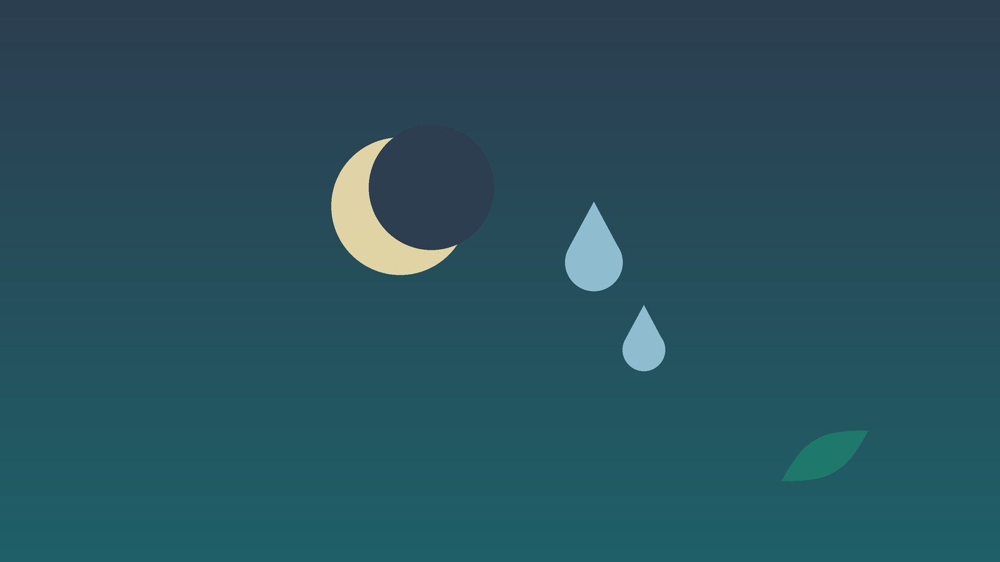

건강 칼럼 · 인천 야간뇨 한의원
밤에 소변 때문에 자꾸 깬다면, 야간뇨 원인 확인과 한방 관리

밤마다 화장실 때문에 깨나요?
- 밤에 소변 때문에 두 번 이상 일어난다
- 밤에 보는 소변 양이 낮보다 오히려 많은 것 같다
- 저녁이 되면 발목과 종아리가 붓고 양말 자국이 깊게 남는다
- 코를 심하게 골거나 자다가 숨이 멎는다는 말을 들었다
- 낮에도 소변이 급하고 자주 마렵다
- 한번 깨면 다시 잠들기 어렵고 아침에 개운하지 않다
이 체크리스트는 진단 도구가 아닙니다. 어떤 항목에 해당하는지에 따라 원인과 먼저 받을 검사가 달라집니다.
밤에 소변이 잦아지는 세 가지 이유
국제요실금학회(ICS)는 자다가 소변 때문에 한 번 이상 깨는 것을 야간뇨로 정의하지만, 실제로 생활이 불편해지는 것은 대개 두 번 이상부터입니다. 같은 학회는 밤 동안 만든 소변이 하루 소변량의 3분의 1을 넘으면(젊은 층은 5분의 1) 야간 다뇨로 봅니다.
- 밤에 소변이 많이 만들어짐 (야간 다뇨): 낮 동안 다리에 고였던 수분이 누우면 몸 안으로 돌아와 소변이 됩니다. 다리 부종, 심부전, 신장 기능 저하, 조절되지 않는 당뇨, 저녁의 물·술·커피, 저녁에 먹는 이뇨제가 원인입니다.
- 방광이 조금만 차도 깸 (방광 용적 감소): 과민성방광이나 전립선비대증, 방광염이 있으면 소변이 조금만 모여도 마렵습니다. 한 번에 보는 양이 적은 것이 특징입니다.
- 잠이 얕아 깸 (수면 문제): 불면, 통증, 우울로 깬 김에 화장실에 가는 경우입니다. 수면무호흡이 있으면 숨이 막힐 때마다 심장이 소변을 늘리는 호르몬을 내보내 야간뇨가 함께 생깁니다.
비뇨의학과나 응급 진료가 먼저인 신호
- 소변에 피가 섞이거나 콜라색 소변이 나온다
- 소변 볼 때 타는 듯 아프고 열이 나거나 옆구리가 아프다
- 아랫배가 부풀어 오르는데 소변이 전혀 나오지 않는다
- 누우면 숨이 차서 베개를 여러 개 받쳐야 잠을 잘 수 있다
- 갈증이 심하고 물을 많이 마시며 체중이 빠진다
- 다리에 힘이 빠지거나 대변까지 조절이 어려워졌다
혈뇨는 방광·신장의 다른 병을 확인해야 하므로 비뇨의학과 검사를 먼저 받으세요. 열과 옆구리 통증은 신우신염일 수 있습니다. 소변이 아예 나오지 않으면 바로 응급실로 가세요. 누우면 숨이 찬 것은 심부전 신호일 수 있어 순환기내과 진료를, 다리 힘 빠짐과 대변 장애가 함께 오면 신경 문제일 수 있어 서둘러 진료를 받으세요.
한의학은 야간뇨를 어떻게 보나요?
한의학에서는 밤에 소변이 많은 것을 야간다뇨(夜間多尿) 또는 야뇨빈삭(夜尿頻數)이라 하였습니다. 물을 다스리는 장부를 신(腎)으로 보고, 해가 지면 몸이 음(陰)의 시간으로 들어가는데 이때 아랫배를 지키는 양기가 약하면 물을 붙잡지 못해 밤에 소변이 늘어난다고 설명했습니다.
또 낮 동안 비(脾)가 수분을 제대로 돌리지 못하면 다리에 물이 고였다가 밤에 내려오고, 마음이 들떠 잠이 얕으면 작은 신호에도 깬다고 보았습니다.
나의 야간뇨는 어떤 유형일까?
검사로 급한 원인이 없음을 확인한 뒤 쓰는 한의학적 구분이며, 두 유형이 함께 보이는 분도 많습니다.
1. 신양허(腎陽虛) 밤이 되면 차가워지는 유형
- 이런 분에게 많아요
- 나이가 들며 추위를 많이 타게 된 분
- 나타나는 모습
- 밤에 맑은 소변을 많이 보고 새벽에 더 잦다
- 함께 오는 몸의 신호
- 허리 아래가 시리고 발이 차서 잠들기 어려움
- 진찰에서 보이는 모습
- 혀가 희고 축축하며 맥이 깊고 느림
- 치료 방향
- 아랫배를 데워 물을 붙잡는 힘을 돕는 방향 (신기환 계열)
- 오늘부터 해 볼 것
- 잠자리에 들기 전 발과 아랫배를 따뜻하게 해 주세요.
2. 비허수습(脾虛水濕) 저녁에 붓는 유형
- 이런 분에게 많아요
- 오래 서 있거나 앉아 일하는 분
- 나타나는 모습
- 저녁마다 다리가 붓고 밤에 소변을 보고 나면 부기가 빠진다
- 함께 오는 몸의 신호
- 몸이 무겁고 식후 졸림, 무른 변
- 진찰에서 보이는 모습
- 혀가 두툼하고 가장자리에 잇자국
- 치료 방향
- 비위를 북돋아 고인 물을 낮 동안 내보내는 방향 (방기황기탕·오령산 계열)
- 오늘부터 해 볼 것
- 오후에 다리를 심장보다 높게 30분 올려 두세요.
3. 심신불교(心腎不交) 잠이 얕아 깨는 유형
- 이런 분에게 많아요
- 생각이 많고 예민해진 분, 갱년기 전후
- 나타나는 모습
- 깬 김에 화장실에 가며 한번 깨면 다시 잠들기 어렵다
- 함께 오는 몸의 신호
- 가슴 두근거림, 밤에 열감과 식은땀, 입마름
- 진찰에서 보이는 모습
- 혀끝이 붉고 태가 적으며 맥이 빠름
- 치료 방향
- 마음을 가라앉혀 잠을 깊게 하는 방향 (천왕보심단·산조인탕 계열)
- 오늘부터 해 볼 것
- 잠자리에서 시계를 보지 마세요.
4. 신기불섭(腎氣不攝) 조금만 차도 마려운 유형
- 이런 분에게 많아요
- 방광이 예민해지거나 출산을 여러 번 한 분
- 나타나는 모습
- 한 번에 보는 양이 적고 밤낮 모두 잦다
- 함께 오는 몸의 신호
- 소변 끝이 시원찮음, 허리 무력감
- 진찰에서 보이는 모습
- 맥이 약하고 척맥이 특히 힘없음
- 치료 방향
- 방광을 거두는 힘을 다지는 방향 (상표초산 계열)
- 오늘부터 해 볼 것
- 낮에 소변을 15분씩 늦추는 연습을 해 보세요.
한의원에서는 어떻게 진찰하나요?
- 배뇨일지: 3일 동안 잠자리에 든 시각과 일어난 시각, 소변 볼 때마다 시간과 양(계량컵), 마신 음료를 적어 오세요.
- 검사 결과: 소변 검사, 혈당, 신장 기능, 전립선·방광 초음파 결과를 확인하고, 아직이라면 필요한 검사를 안내합니다.
- 약과 생활: 이뇨제, 혈압약, 당뇨약 등 드시는 약과 먹는 시각, 저녁 습관을 여쭙습니다. 약은 알려 주시면 확인해 처방합니다.
- 부종과 맥·혀: 발목을 눌러 붓기를 보고 아랫배의 온기, 혀와 맥을 살핍니다.
침·약침·한약 치료는 어떻게 하나요?
1. 침 치료
- 태계(太谿): 발 안쪽 복사뼈 바로 뒤, 힘줄과의 사이에 손끝이 쏙 들어가는 자리입니다. 신의 기운을 도울 때 씁니다.
- 기해(氣海): 배꼽에서 아래로 손가락 두 개 너비쯤입니다.
- 삼음교(三陰交): 안쪽 복사뼈 꼭대기에서 손가락 네 개 너비 위, 정강이뼈 뒤쪽 가장자리입니다.
- 신문(神門): 손목 안쪽 주름에서 새끼손가락 쪽 끝 오목한 곳입니다. 잠이 얕은 유형에 더합니다.
임신 중에는 삼음교와 아랫배 혈을 자극하지 않습니다.
2. 약침·온열 요법
아랫배와 허리의 관련 혈에 약침을 시행하고, 몸이 찬 유형은 아랫배와 허리를 데우는 온열 요법을 함께 합니다. 임신 중에도 주수와 상태를 먼저 확인하고, 피해야 할 부위를 빼고 시행합니다.
3. 한약
한약은 달인 탕약을 위주로 씁니다. 붓는 분은 저녁이 아니라 낮 동안 소변이 잘 나오도록 돕고, 잠이 얕은 분은 잠을 깊게 하는 데 무게를 둡니다. 침과 한약의 야간뇨 연구는 아직 규모가 작아, 배뇨일지로 깨는 횟수를 비교하며 진행합니다. 임신 중이거나 심장·신장 질환 병력이 있다면 진료 때 꼭 알려 주세요. 확인 후 안전한 약재로 처방합니다. 한약은 원장이 원내 탕전실에서 약재 선별부터 달이는 과정까지 직접 관리하며, 10일분씩 처방해 복용 경과를 보고 약재 구성과 양을 조절합니다.
원장님이 네이버 블로그에 진료 이야기와 건강 정보를 꾸준히 올리고 있습니다. 더 많은 이야기는 블로그에서 확인해 보세요.
블로그 보기관리는 어떤 순서로 진행되나요?
- 원인 가리기 배뇨일지와 검사로 야간 다뇨, 방광 문제, 수면 문제 중 어디에 가까운지 봅니다.
- 첫 한방 진료 유형을 나누고 저녁 수분·약 먹는 시각 같은 생활 조절을 함께 정합니다.
- 4~8주 침·약침과 탕약으로 아랫배를 데우고 부기와 잠을 다스립니다.
- 일지 다시 쓰기 밤에 깨는 횟수와 밤 소변량을 처음과 비교해 처방을 조정합니다.
기간과 횟수는 증상이 얼마나 오래되었는지, 동반 증상이 무엇인지에 따라 달라지며, 진찰 후 개인별로 안내합니다.
밤에 덜 깨기 위한 생활 관리
- 물은 낮에: 하루 마실 물은 오후 늦게까지 나눠 마시고, 잠들기 2시간 전부터는 목을 축이는 정도로 줄입니다.
- 저녁 술·커피 끊기: 커피, 녹차, 술은 소변을 늘리고 잠을 얕게 하니 오후 이후에는 피하세요.
- 다리 올리기: 저녁 식사 뒤 다리를 높이 올려 쉬면 고인 수분이 잠들기 전에 소변으로 빠집니다.
- 밤길 안전: 침실에서 화장실까지 발밑 조명을 켜 두고, 일어날 때는 앉았다가 천천히 일어나세요.
- 이뇨제 복용 시각: 이뇨제를 저녁에 드신다면 복용 시각을 바꿀 수 있는지 처방한 병원에 물어보세요. 처방약은 담당 의사와 상의 없이 끊지 마세요.
다른 진료가 함께 필요한 경우
- 소변 줄기가 약하고 잔뇨감이 있는 남성은 비뇨의학과에서 전립선 검사를 받으세요.
- 코골이와 숨 멈춤이 있으면 수면다원검사로 수면무호흡을 확인하세요. 치료하면 야간뇨가 함께 줄기도 합니다.
- 다리 부종과 숨참이 함께 있으면 순환기내과·신장내과에서 심장과 신장 기능을 확인하세요.
- 야간 다뇨에는 소변을 줄이는 약(데스모프레신)이 쓰이기도 하는데, 어르신은 혈중 나트륨이 떨어질 수 있어 처방한 병원에서 정기 검사를 받으세요.
자주 묻는 질문 Q&A
- Q1. 밤에 한 번 깨는 것도 문제인가요?
- 잠을 다시 잘 잔다면 크게 걱정하지 않아도 됩니다. 두 번 이상이거나 낮 피로가 심하면 원인을 확인해 보세요.
- Q2. 물을 아예 안 마시고 자면 되지 않나요?
- 지나치게 줄이면 탈수와 변비, 소변이 진해지는 문제가 생깁니다.
- Q3. 나이가 들면 당연히 생기는 것 아닌가요?
- 나이와 함께 늘지만, 부종이나 수면무호흡처럼 고칠 수 있는 원인이 숨어 있는 경우가 많습니다.
- Q4. 배뇨일지는 꼭 써야 하나요?
- 원인을 가리는 가장 쉬운 방법이라 꼭 권합니다. 계량컵 하나면 충분합니다.
- Q5. 혈압약 때문에 밤에 소변이 많은 것 같아요.
- 이뇨제가 들어 있을 수 있습니다. 복용 시각은 처방한 병원에 물어보시고 임의로 끊지 마세요.
- Q6. 여성도 야간뇨가 생기나요?
- 네. 과민성방광이나 갱년기 수면 변화로 흔히 생깁니다.
- Q7. 한약을 먹으면 소변이 더 늘지 않나요?
- 붓는 유형은 낮에 소변을 내보내도록 조절하고, 저녁에는 수분을 줄이도록 복용 시간을 함께 안내합니다.
- Q8. 침 치료는 얼마나 자주 받나요?
- 주 1~2회로 시작해 일지 변화를 보며 조절합니다.
문원열 대표원장한의사 · 365스마일한의원
임상 경력 15년, 인천 서구 가정동에서 개원 후 10년째 진료하고 있으며, FCST 턱관절학회·연부조직학회·침도학회 등에서 활동합니다. 아픈 곳만이 아니라 증상의 원인을 찾아 진료합니다.
진료 안내
- 진료시간
- 평일 09:00~20:00 (점심시간 13:00~14:00, 접수 마감 19:30)
토·일·공휴일 09:00~15:00 (접수 마감 14:30) - 주소
- 인천광역시 서구 가경주로 46, 2층 (가정동)
인천2호선 가정중앙시장역 인근
영상으로 길 안내 보기 → - 주차
- 한의원 건물 바로 앞 1층 도원주차장
- 예약
- 예약 바로가기 또는 전화 예약
진료시간은 사정에 따라 바뀔 수 있으니 방문 전 전화로 확인해 주세요.
함께 읽으면 좋은 칼럼
건강 칼럼 전체 보기 →
참고 자료
- van Kerrebroeck P, et al. The standardisation of terminology in nocturia: report from the Standardisation Sub-committee of the International Continence Society. Neurourology and Urodynamics, 2002
- 질병관리청 국가건강정보포털 — 원문
※ 이 글은 일반적인 건강 정보이며, 개인의 상태에 따라 치료 방법과 결과는 다를 수 있습니다. 정확한 진단과 치료는 진료를 통해 결정됩니다. 침·약침 시술 후 드물게 멍, 통증 등이 생길 수 있습니다.